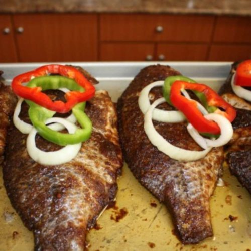

Tilapia

Grilling Tilapia
Tilapia is a river fish that is a delicacy in Ghana. It can be used for stew, soups and also eaten by grilling, baking and frying. Enjoy!!
Ingredients
- I pack of Tilapia (3 ibs)
- 2 teaspoon of Ginger
- 1/2 clove of Garlic
- 1/2 of a full Onion
- 1 teaspoon of salt
- 2 big sized Maggie cube
- Seasoning salt of choice (i.e anapona)
- 1 Tomato
- 2-3 Fresh green Pepper
Steps
- Start of by cleaning the fish, getting rid of scales, the stomach and also removing the fins. These steps are optional as some people just go ahead and season the fish without cleaning it
- Blend about ½ onion, ½ of garlic and 2 tablespoons of ginger with about a teaspoon of oil, 2 Maggie cubes and salt (these type of seasoning are optional. Other kinds can be used).
- Depending how many fish you are making, you may have to add more or less of the onion, garlic and ginger.
- Season the fish with the mixture and bake at preferably medium heat to prevent the fish from burning.
- Tilapia does not take very long to cook. The median time is about 20-30 minutes when baking.